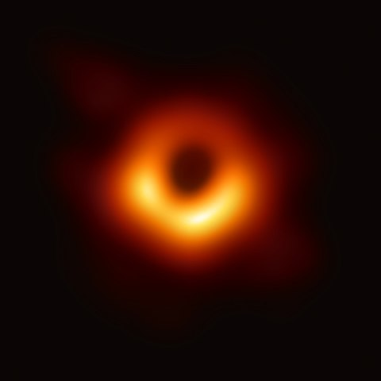
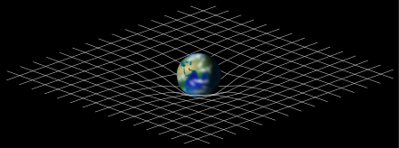
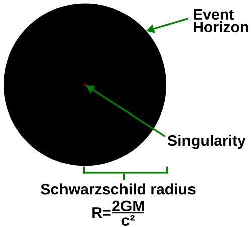

A black hole is a region of spacetime where gravity is so strong that nothing – no particles or even electromagnetic radiation such as light – can escape from it. The theory of general relativity predicts that a sufficiently compact mass can deform spacetime to form a black hole. The boundary of no escape is called the event horizon. Although it has a great effect on the fate and circumstances of an object crossing it, it has no locally detectable features according to general relativity. In many ways, a black hole acts like an ideal black body, as it reflects no light. Moreover, quantum field theory in curved spacetime predicts that event horizons emit Hawking radiation, with the same spectrum as a black body of a temperature inversely proportional to its mass. This temperature is of the order of billionths of a kelvin for stellar black holes, making it essentially impossible to observe directly.
Objects whose gravitational fields are too strong for light to escape were first considered in the 18th century by John Michell and Pierre-Simon Laplace. In 1916, Karl Schwarzschild found the first modern solution of general relativity that would characterize a black hole. David Finkelstein, in 1958, first published the interpretation of "black hole" as a region of space from which nothing can escape. Black holes were long considered a mathematical curiosity; it was not until the 1960s that theoretical work showed they were a generic prediction of general relativity. The discovery of neutron stars by Jocelyn Bell Burnell in 1967 sparked interest in gravitationally collapsed compact objects as a possible astrophysical reality. The first black hole known was Cygnus X-1, identified by several researchers independently in 1971.
Black holes of stellar mass form when massive stars collapse at the end of their life cycle. After a black hole has formed, it can grow by absorbing mass from its surroundings. Supermassive black holes of millions of solar masses (M☉) may form by absorbing other stars and merging with other black holes. There is consensus that supermassive black holes exist in the centres of most galaxies.
The presence of a black hole can be inferred through its interaction with other matter and with electromagnetic radiation such as visible light. Any matter that falls onto a black hole can form an external accretion disk heated by friction, forming quasars, some of the brightest objects in the universe. Stars passing too close to a supermassive black hole can be shredded into streamers that shine very brightly before being "swallowed." If other stars are orbiting a black hole, their orbits can determine the black hole's mass and location. Such observations can be used to exclude possible alternatives such as neutron stars. In this way, astronomers have identified numerous stellar black hole candidates in binary systems and established that the radio source known as Sagittarius A*, at the core of the Milky Way galaxy, contains a supermassive black hole of about 4.3 million solar masses. 
On 11 February 2016, the LIGO Scientific Collaboration and the Virgo collaboration announced the first direct detection of gravitational waves, representing the first observation of a black hole merger. On 10 April 2019, the first direct image of a black hole and its vicinity was published, following observations made by the Event Horizon Telescope (EHT) in 2017 of the supermassive black hole in Messier 87's galactic centre. As of 2021, the nearest known body thought to be a black hole is around 1,500 light-years (460 parsecs) away (see list of nearest black holes). Though only a couple dozen black holes have been found so far in the Milky Way, there are thought to be hundreds of millions, most of which are solitary and do not cause emission of radiation. Therefore, they would only be detectable by gravitational lensing.
The idea of a body so big that even light could not escape was briefly proposed by English astronomical pioneer and clergyman John Michell in a letter published in November 1784. Michell's simplistic calculations assumed such a body might have the same density as the Sun, and concluded that one would form when a star's diameter exceeds the Sun's by a factor of 500, and its surface escape velocity exceeds the usual speed of light. Michell referred to these bodies as dark stars. He correctly noted that such supermassive but non-radiating bodies might be detectable through their gravitational effects on nearby visible bodies. Scholars of the time were initially excited by the proposal that giant but invisible 'dark stars' might be hiding in plain view, but enthusiasm dampened when the wavelike nature of light became apparent in the early nineteenth century, as if light were a wave rather than a particle, it was unclear what, if any, influence gravity would have on escaping light waves.
Modern physics discredits Michell's notion of a light ray shooting directly from the surface of a supermassive star, being slowed down by the star's gravity, stopping, and then free-falling back to the star's surface.
The no-hair theorem postulates that, once it achieves a stable condition after formation, a black hole has only three independent physical properties: mass, electric charge, and angular momentum; the black hole is otherwise featureless. If the conjecture is true, any two black holes that share the same values for these properties, or parameters, are indistinguishable from one another. The degree to which the conjecture is true for real black holes under the laws of modern physics is currently an unsolved problem.
These properties are special because they are visible from outside a black hole. For example, a charged black hole repels other like charges just like any other charged object. Similarly, the total mass inside a sphere containing a black hole can be found by using the gravitational analog of Gauss's law (through the ADM mass), far away from the black hole. Likewise, the angular momentum (or spin) can be measured from far away using frame dragging by the gravitomagnetic field, through for example the Lense–Thirring effect.
When an object falls into a black hole, any information about the shape of the object or distribution of charge on it is evenly distributed along the horizon of the black hole, and is lost to outside observers. The behavior of the horizon in this situation is a dissipative system that is closely analogous to that of a conductive stretchy membrane with friction and electrical resistance—the membrane paradigm. This is different from other field theories such as electromagnetism, which do not have any friction or resistivity at the microscopic level, because they are time-reversible. Because a black hole eventually achieves a stable state with only three parameters, there is no way to avoid losing information about the initial conditions: the gravitational and electric fields of a black hole give very little information about what went in. The information that is lost includes every quantity that cannot be measured far away from the black hole horizon, including approximately conserved quantum numbers such as the total baryon number and lepton number. This behavior is so puzzling that it has been called the black hole information loss paradox.
The defining feature of a black hole is the appearance of an event horizon—a boundary in spacetime through which matter and light can pass only inward towards the mass of the black hole. Nothing, not even light, can escape from inside the event horizon. The event horizon is referred to as such because if an event occurs within the boundary, information from that event cannot reach an outside observer, making it impossible to determine whether such an event occurred.
As predicted by general relativity, the presence of a mass deforms spacetime in such a way that the paths taken by particles bend towards the mass. At the event horizon of a black hole, this deformation becomes so strong that there are no paths that lead away from the black hole.
To a distant observer, clocks near a black hole would appear to tick more slowly than those farther away from the black hole. Due to this effect, known as gravitational time dilation, an object falling into a black hole appears to slow as it approaches the event horizon, taking an infinite time to reach it. At the same time, all processes on this object slow down, from the viewpoint of a fixed outside observer, causing any light emitted by the object to appear redder and dimmer, an effect known as gravitational redshift. Eventually, the falling object fades away until it can no longer be seen. Typically this process happens very rapidly with an object disappearing from view within less than a second.
On the other hand, indestructible observers falling into a black hole do not notice any of these effects as they cross the event horizon. According to their own clocks, which appear to them to tick normally, they cross the event horizon after a finite time without noting any singular behaviour; in classical general relativity, it is impossible to determine the location of the event horizon from local observations, due to Einstein's equivalence principle.
The topology of the event horizon of a black hole at equilibrium is always spherical. For non-rotating (static) black holes the geometry of the event horizon is precisely spherical, while for rotating black holes the event horizon is oblate
At the centre of a black hole, as described by general relativity, may lie a gravitational singularity, a region where the spacetime curvature becomes infinite. For a non-rotating black hole, this region takes the shape of a single point; for a rotating black hole it is smeared out to form a ring singularity that lies in the plane of rotation. In both cases, the singular region has zero volume. It can also be shown that the singular region contains all the mass of the black hole solution. The singular region can thus be thought of as having infinite density.
Observers falling into a Schwarzschild black hole (i.e., non-rotating and not charged) cannot avoid being carried into the singularity once they cross the event horizon. They can prolong the experience by accelerating away to slow their descent, but only up to a limit. When they reach the singularity, they are crushed to infinite density and their mass is added to the total of the black hole. Before that happens, they will have been torn apart by the growing tidal forces in a process sometimes referred to as spaghettification or the "noodle effect".
In the case of a charged (Reissner–Nordström) or rotating (Kerr) black hole, it is possible to avoid the singularity. Extending these solutions as far as possible reveals the hypothetical possibility of exiting the black hole into a different spacetime with the black hole acting as a wormhole. The possibility of traveling to another universe is, however, only theoretical since any perturbation would destroy this possibility. It also appears to be possible to follow closed timelike curves (returning to one's own past) around the Kerr singularity, which leads to problems with causality like the grandfather paradox. It is expected that none of these peculiar effects would survive in a proper quantum treatment of rotating and charged black holes.
The appearance of singularities in general relativity is commonly perceived as signaling the breakdown of the theory. This breakdown, however, is expected; it occurs in a situation where quantum effects should describe these actions, due to the extremely high density and therefore particle interactions. To date, it has not been possible to combine quantum and gravitational effects into a single theory, although there exist attempts to formulate such a theory of quantum gravity. It is generally expected that such a theory will not feature any singularities.
The photon sphere is a spherical boundary of zero thickness in which photons that move on tangents to that sphere would be trapped in a circular orbit about the black hole. For non-rotating black holes, the photon sphere has a radius 1.5 times the Schwarzschild radius. Their orbits would be dynamically unstable, hence any small perturbation, such as a particle of infalling matter, would cause an instability that would grow over time, either setting the photon on an outward trajectory causing it to escape the black hole, or on an inward spiral where it would eventually cross the event horizon.
While light can still escape from the photon sphere, any light that crosses the photon sphere on an inbound trajectory will be captured by the black hole. Hence any light that reaches an outside observer from the photon sphere must have been emitted by objects between the photon sphere and the event horizon. For a Kerr black hole the radius of the photon sphere depends on the spin parameter and on the details of the photon orbit, which can be prograde (the photon rotates in the same sense of the black hole spin) or retrograde.
Rotating black holes are surrounded by a region of spacetime in which it is impossible to stand still, called the ergosphere. This is the result of a process known as frame-dragging; general relativity predicts that any rotating mass will tend to slightly "drag" along the spacetime immediately surrounding it. Any object near the rotating mass will tend to start moving in the direction of rotation. For a rotating black hole, this effect is so strong near the event horizon that an object would have to move faster than the speed of light in the opposite direction to just stand still.
The ergosphere of a black hole is a volume bounded by the black hole's event horizon and the ergosurface, which coincides with the event horizon at the poles but is at a much greater distance around the equator.
Objects and radiation can escape normally from the ergosphere. Through the Penrose process, objects can emerge from the ergosphere with more energy than they entered with. The extra energy is taken from the rotational energy of the black hole. Thereby the rotation of the black hole slows down. A variation of the Penrose process in the presence of strong magnetic fields, the Blandford–Znajek process is considered a likely mechanism for the enormous luminosity and relativistic jets of quasars and other active galactic nuclei.
Given the bizarre character of black holes, it was long questioned whether such objects could actually exist in nature or whether they were merely pathological solutions to Einstein's equations. Einstein himself wrongly thought black holes would not form, because he held that the angular momentum of collapsing particles would stabilize their motion at some radius. This led the general relativity community to dismiss all results to the contrary for many years. However, a minority of relativists continued to contend that black holes were physical objects, and by the end of the 1960s, they had persuaded the majority of researchers in the field that there is no obstacle to the formation of an event horizon.
Penrose demonstrated that once an event horizon forms, general relativity without quantum mechanics requires that a singularity will form within. Shortly afterwards, Hawking showed that many cosmological solutions that describe the Big Bang have singularities without scalar fields or other exotic matter (see "Penrose–Hawking singularity theorems"). The Kerr solution, the no-hair theorem, and the laws of black hole thermodynamics showed that the physical properties of black holes were simple and comprehensible, making them respectable subjects for research. Conventional black holes are formed by gravitational collapse of heavy objects such as stars, but they can also in theory be formed by other processes
By nature, black holes do not themselves emit any electromagnetic radiation other than the hypothetical Hawking radiation, so astrophysicists searching for black holes must generally rely on indirect observations. For example, a black hole's existence can sometimes be inferred by observing its gravitational influence on its surroundings.
On 10 April 2019, an image was released of a black hole, which is seen magnified because the light paths near the event horizon are highly bent. The dark shadow in the middle results from light paths absorbed by the black hole. The image is in false color, as the detected light halo in this image is not in the visible spectrum, but radio waves.
The Event Horizon Telescope (EHT) is an active program that directly observes the immediate environment of black holes' event horizons, such as the black hole at the centre of the Milky Way. In April 2017, EHT began observing the black hole at the centre of Messier 87. "In all, eight radio observatories on six mountains and four continents observed the galaxy in Virgo on and off for 10 days in April 2017" to provide the data yielding the image in April 2019. After two years of data processing, EHT released the first direct image of a black hole; specifically, the supermassive black hole that lies in the centre of the aforementioned galaxy. What is visible is not the black hole—which shows as black because of the loss of all light within this dark region. Instead, it is the gases at the edge of the event horizon (displayed as orange or red) that define the black hole.
On 12 May 2022, the EHT released the first image of Sagittarius A*, the supermassive black hole at the centre of the Milky Way galaxy. The published image displayed the same ring-like structure and circular shadow as seen in the M87* black hole, and the image was created using the same techniques as for the M87 black hole. However, the imaging process for Sagittarius A*, which is more than a thousand times smaller and less massive than M87*, was significantly more complex because of the instability of its surroundings. The image of Sagittarius A* was also partially blurred by turbulent plasma on the way to the galactic centre, an effect which prevents resolution of the image at longer wavelengths.
The brightening of this material in the 'bottom' half of the processed EHT image is thought to be caused by Doppler beaming, whereby material approaching the viewer at relativistic speeds is perceived as brighter than material moving away. In the case of a black hole, this phenomenon implies that the visible material is rotating at relativistic speeds (>1,000 km/s [2,200,000 mph]), the only speeds at which it is possible to centrifugally balance the immense gravitational attraction of the singularity, and thereby remain in orbit above the event horizon. This configuration of bright material implies that the EHT observed M87* from a perspective catching the black hole's accretion disc nearly edge-on, as the whole system rotated clockwise. However, the extreme gravitational lensing associated with black holes produces the illusion of a perspective that sees the accretion disc from above. In reality, most of the ring in the EHT image was created when the light emitted by the far side of the accretion disc bent around the black hole's gravity well and escaped, meaning that most of the possible perspectives on M87* can see the entire disc, even that directly behind the "shadow".
In 2015, the EHT detected magnetic fields just outside the event horizon of Sagittarius A* and even discerned some of their properties. The field lines that pass through the accretion disc were a complex mixture of ordered and tangled. Theoretical studies of black holes had predicted the existence of magnetic fields.